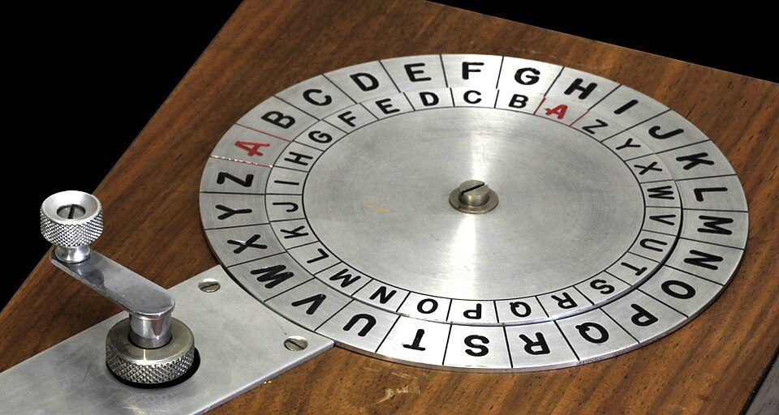
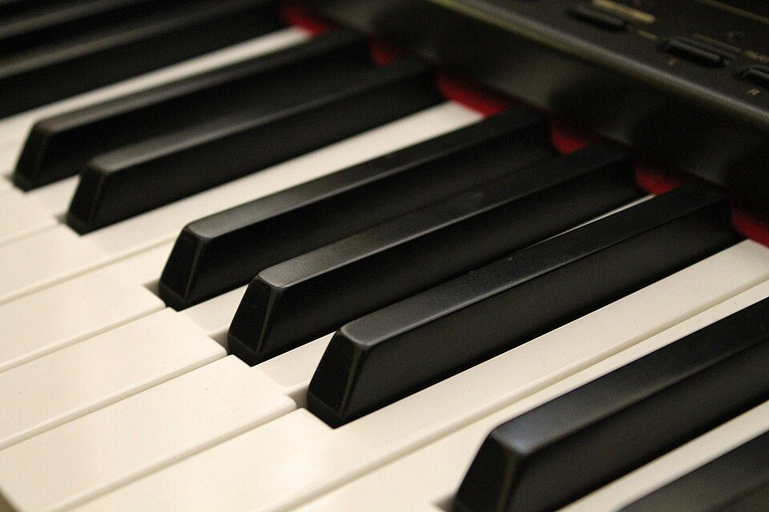
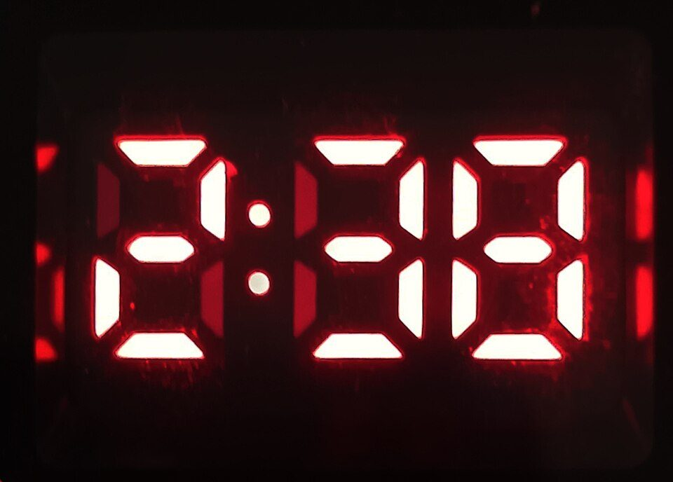
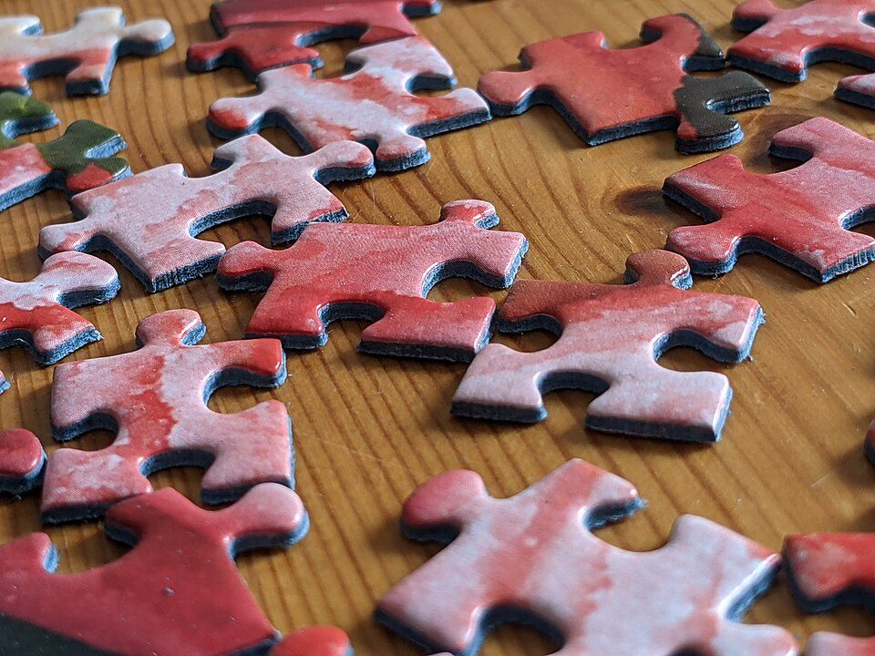
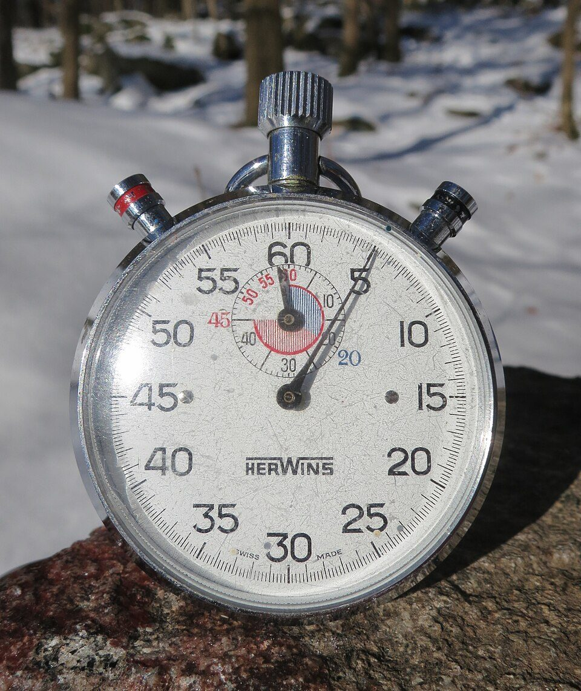

謎解きのコツと練習法：よく出る謎の型、覚えておきたい表、行き詰まったときの考え方（2026年版）
要点まとめ
謎解きゲームや謎検（謎解き能力検定）で「あと一歩で解けない」を減らすための、解き方のコツと練習法をまとめました。根拠は、謎検を主催する株式会社SCRAPの公式発表、出版社の説明、文化庁・総務省・国立天文台の資料、ひらめき（洞察）についての心理学の研究です。例題は筆者が作ったもので、謎検や本、公演の問題ではありません。謎検2026秋は、2026年11月25日から12月1日まで受検できる期間中です[8]。謎解きの形式・主な団体・料金・参加の決まりごとは、謎解きゲームの主な団体と、初めての遊び方（2026年版）にまとめています。
謎解きで問われる力
謎検は、「謎解き力」を5つのジャンルに分けて判定しています[1]。主催者は、1つの答えに対してどれだけ多くの考え方を思いつけるかが謎解き力だと説明しています[1]。受検後の成績表では、この5つの力ごとの分析が見られます[8]。
| 力 | 謎検の説明 | 練習で意識すること（筆者の提案） |
|---|---|---|
| ひらめき力 | 経験や記憶から、直感で答えを引き出す力 | よく出る型を知り、解いた経験を増やす（第2章） |
| 注意力 | よく観察して、問題の中の違和感や違いに気づく力 | 図や文字を1つずつ指でたどり、見落としを減らす |
| 分析力 | 情報をいろいろな角度から見て、答えまでの道筋を組み立てる力 | 五十音や方角などの表に当てはめて整理する（第3章） |
| 推理力 | ルールや法則を見つけて、答えを導く力 | 例として示された組み合わせから、規則を書き出す |
| 持久力 | 最後まであきらめず、もれなく確かめながら解き進める力 | 時間を計って50問を通して解く（第6章） |
知識は要る？ 説明している主体で答えが違う
公演は「知識は不要」、検定や本は一般常識を使う問題も扱う
SCRAPは、会場に行くリアル脱出ゲームの紹介で「謎を解くのに知識や運動神経は必要ありません」とし、必要なものは会場にすべて用意されていると説明しています[10]。一方、謎検のよくある質問は、小学校で習う範囲の知識を必要とする謎が出るため中学生以上を勧めるとし、制限時間はあるものの、知識を検索しながら受検することもできるとしています[11]。
SCRAP出版は、五十音表やアルファベットなど世間一般の知識が使われる「題材系」を、数多く登場するジャンルだと説明しています[12]。KADOKAWAの『謎解き力養成大全』も、謎解きは幅広い一般教養から出題されることが多いと説明しています[13]。公演は会場の中で解けるように作られ、検定や本は一般常識を使う問題も扱う、と対象が違うと考えられます（筆者の見解）。
よく出る謎の型と例題
謎検は、出題の一部について「出題ジャンル」を事前に発表しています（2025秋・2026春・2026秋で確認）[3][14]。2026秋は2026年10月26日に、50問のうち15問について4ジャンル15項目を発表しました。残りの35問には、これ以外の項目が出る可能性があります[15][2]。
| ジャンル | 項目 | どんな謎か |
|---|---|---|
| 言葉遊び | 何文字目？ | 言葉の中から決まった位置の文字を拾う |
| 文字種変換 | 漢字・ひらがな・カタカナを入れかえる | |
| 合体漢字 | 漢字を部品に分けて考える | |
| ふりがな／送りがな | 漢字の読みがなや送りがなを使う | |
| 題材系 | 音階 | ドレミファソラシを使う |
| 画数 | 漢字の画数を使う | |
| 数字の読み方 | 数字の読み方を使う | |
| デジタル数字 | デジタル表示の数字の形を使う | |
| 図形／イラスト | 境目や隙間 | 図形の境目やすき間を文字として読む |
| 立方体 | 頭の中で立方体を組み立てる | |
| 足りない部分を補完 | 完全な形から、欠けている部分を考える | |
| 文字数＝個数 | 絵の個数や分け方が文字数を表す | |
| パズル | 一筆書き | 盤面のすべての場所を通る |
| ネットワーズ | 絵を囲む線の上に名前を入れる | |
| 文字置換パズル | 文字を置きかえた言葉から答えを出す |
予告される項目は、回ごとに入れ替わる
3回分を比べると、4ジャンルの枠は同じで項目は違う
2026春の予告は、英語／日本語変換、アルファベット、都道府県、方角、トランプ、クロスワード、スケルトンなどの15項目でした[14]。2025秋は、たぬき問題、しりとり、五十音、アルファベット、惑星、四季／月、迷路、スケルトン、論理パズルなどの15項目でした[3]。
筆者が3回分を照らし合わせると、アルファベットとスケルトンは2025秋と2026春に、境目や隙間と文字数＝個数は2025秋と2026秋に出ていました。3回すべてに出た項目はなく、「毎回出る型」とは言えません。予告は50問のうち15問だけなので、予告以外の型も広く練習しておくのが安全です（筆者の見解）。
型の全体像は『謎図鑑』の94項目
出版社は、1枚で解く謎を94項目に分類したと説明
SCRAP出版の『SCRAP presents 謎図鑑』（2023年7月7日発売）は、1枚の画像をもとに解く謎解き問題を、序章「謎解きの基本」と、言葉遊び・題材系・図形／イラスト・パズルの4章に分け、94項目に分類したと説明しています[16]。各項目に謎の解説、よく出されるパターン、解き方のコツがあり、謎検で出た問題を中心にした例題が199問あるとしています[16]。謎検の出題ジャンル発表は、項目ごとに『謎図鑑』のページ数を示しています[2]。
ここからは筆者が作った例題です。答えと解き方は、それぞれの「答えと解き方」を開くと表示されます。
例題1（言葉遊び）：カタカナを漢字として見る
左に「エ」、右に「カ」を置いて1つの漢字にすると何？
答えと解き方
- 答えは「功」（こう）
- カタカナの「エ」は漢字の「工」、「カ」は漢字の「力」と同じ形をしている
- 左に「工」、右に「力」を並べると「功」になる
- 文字種変換と合体漢字の組み合わせ。文字を別の種類の文字として見直すのがコツ（筆者の見解）

例題2（パズル）：文字の置きかえ
「うね」が「いぬ」を表すなら、「しきに」は何を表す？
答えと解き方
- 答えは「さかな」
- う→い、ね→ぬ。どの文字も、五十音表で同じ行の1つ前の文字に戻している
- 同じように1つ前へ戻すと、し→さ、き→か、に→な
- 例の組み合わせを五十音表の上でたどると、ずらし方が見えやすい（筆者の見解）

例題3（題材系）：数字が表すもの
5・4が家具、3・5が調味料なら、5・6・3・3は何？
答えと解き方
- 答えは「そらみみ」（空耳）
- 音階を1＝ド、2＝レ、3＝ミ、4＝ファ、5＝ソ、6＝ラ、7＝シと数える
- 5・4＝ソファ、3・5＝ミソ。5・6・3・3＝ソ・ラ・ミ・ミ
- 数字が1〜7しか出てこないときは、音階のような「7つの並び」を疑ってみる（筆者の見解）
覚えておくと役立つ表
謎検の予告では、2025秋・2026春・2026秋の3回とも、決まった並びや形を使う「題材系」が4項目ずつありました（五十音、アルファベット、都道府県、方角、四季／月、音階、画数、数字の読み方、デジタル数字など）[3][14][2]。このうち、もとになる並びや書き方を公的な機関が示しているものを紹介します。
| 予告に出た項目 | 関係する表 | 示している機関 |
|---|---|---|
| アルファベット（2025秋・2026春） | ローマ字のつづり方（2025年改定） | 文化庁 |
| 五十音（2025秋） | 現代仮名遣い（仮名の書き方のよりどころ） | 文化庁 |
| 方角（2026春） | 十二支と方角・時刻 | 国立天文台 暦計算室 |
| 都道府県（2026春） | 都道府県コード（01〜47） | 総務省 |
| デジタル数字（2026秋） | 7本の線の形（このあとの図） | 筆者の作図 |
2025年に改定 ローマ字のつづり方
「shi」「chi」「tsu」などを使う表一つにまとまった
文化審議会は2025年8月20日、「改定ローマ字のつづり方」を答申しました[17]。政府はこれを採択し、令和7年内閣告示第4号として実施しました。これに伴い、昭和29年12月の内閣告示第1号・内閣訓令第1号は廃止されています[4]。新しい表には、社会で実際に使われている「shi」「tsu」「chi」「fu」「ji」などが採用されました[4]。
| かな | 新しい表（本表） | いわゆる訓令式 |
|---|---|---|
| し | shi | si |
| ち | chi | ti |
| つ | tsu | tu |
仮名の数え方の手がかりは「現代仮名遣い」
「とうだい」「ねえさん」など、長音の書き方が決まっている
「現代仮名遣い」は、1986年（昭和61年）7月1日に内閣告示第1号として告示された、現代の国語を仮名で書き表すときのよりどころです。2010年11月30日に一部が改正されました[18]。本文では、オ列の長音は「う」を添える（例: おとうさん、とうだい）、エ列の長音は「え」を添える（例: ねえさん）、拗音の「や・ゆ・よ」と促音の「つ」はなるべく小書きにする、としています[19]。
「何文字目？」や「文字数＝個数」の謎では、言葉を仮名で書いたときの文字数が答えを左右します。小さい「ゃ」や「っ」を1文字と数えるかなどは、問題の例で確かめるのが確実です（筆者の見解）。
十二支は、方角と時刻にも使われる
北が子、東が卯、南が午、西が酉
国立天文台の暦Wikiによると、十二支を方角に使うときは、北を子として東回りに名づけていきます[20]。
| 十二支 | よみ | 方角 | 時刻 |
|---|---|---|---|
| 子 | ね | 北 | 23〜1時 |
| 丑 | うし | 1〜3時 | |
| 寅 | とら | 3〜5時 | |
| 卯 | う | 東 | 5〜7時 |
| 辰 | たつ | 7〜9時 | |
| 巳 | み | 9〜11時 | |
| 午 | うま | 南 | 11〜13時 |
| 未 | ひつじ | 13〜15時 | |
| 申 | さる | 15〜17時 | |
| 酉 | とり | 西 | 17〜19時 |
| 戌 | いぬ | 19〜21時 | |
| 亥 | い（暦Wikiでは「ゐ」） | 21〜23時 |
都道府県には01〜47の番号がある
総務省のコードは、01北海道から47沖縄県まで
総務省の「全国及び都道府県の区域を示すコード」は、00を全国とし、01北海道、13東京都、27大阪府、47沖縄県のように番号を付けています[21]。全国地方公共団体コードの仕様では、都道府県コードは01から47までの連番で、並べる順序は統計その他一般の慣用によるとしています[22]。都道府県の数や並び順を使う謎では、手元に一覧があると確かめやすくなります（筆者の見解）。
デジタル数字は、7本の線の光り方で0〜9を表します。6・7・9などは、表示する機器によって線の本数が違う形もあるので、謎では問題に描かれた形で数えるのが確実です（筆者の見解）。

例題4（題材系）：デジタル数字の線を数える
上の図の形で「2026」と表示すると、線は何本光る？
答えと解き方
- 答えは22本
- 2は5本、0は6本、2は5本、6は6本。5＋6＋5＋6＝22
- 1本ずつ数え、合計をもう一度確かめる。謎検の「持久力」にある「もれなく確認」の練習になる（筆者の見解）
行き詰まったときの考え方（研究から）
心理学では、ひらめきが必要な問題の解き方を「洞察問題解決」として研究しています[5]。2014年の総説は、洞察（ひらめき）を、ある刺激や状況を、突然、すぐには思いつかない別の見方で解釈し直すことだと説明しています[23]。ここで紹介する研究は、マッチ棒の式やコインの並べかえなどの課題を使ったもので、謎解きゲームや謎検そのものを調べたものではありません。
表し方を変えると、解ける人が増えた
数字の書き方を切りかえた人は、解ける人が多かった
2002年の論文（認知科学）は、ローマ数字で書いた誤った式を、棒を1本だけ動かして正しくする「マッチ棒の式」の課題を使いました（例: IV=III+III→VI=III+III）[5]。実験1では、同じ問題を算用数字で出すと、ローマ数字で出したときより成績が統計的に有意に低くなりました。実験2では、1回目と2回目に解けなかった人が、3回目に算用数字からローマ数字に切りかえると、解ける人が統計的に有意に多くなりました[5]。参加人数は抄録に書かれていません。
謎でも、ひらがなをカタカナや漢字に、数字を読み方やデジタル数字の形に置きかえてみると、別の見方が出やすくなると考えられます（筆者の見解。例題1・4）。
いったん離れる「孵化」には、条件つきで効果
問題を置いておく時間に、全体としてプラスの効果
問題をいったん脇に置く時間を「孵化（ふか）期間」と呼びます。2009年のメタ分析（多くの研究の結果をまとめて分析する方法）は、孵化には全体としてプラスの効果があるとしました[6]。ただし効果の大きさは条件で違い、いろいろな案を出す課題のほうが、言葉や図の洞察課題より効果が大きく、離れる前に取り組む時間が長いほど効果が大きく、離れている間に頭を使う作業をすると効果は小さくなりました[6]。
眠ったあとに、隠れた規則に気づく人が増えた
睡眠後に規則に気づいた人は、起きていた場合の2倍超
2004年にNatureに載った実験では、決まった順番に反応する課題を練習しました。この課題は、すべての順番の下にある隠れた規則に気づくと、急に速く解けるようになります。最初の練習のあと、8時間の「夜の睡眠」「夜に起きている」「昼に起きている」のどれかを過ごし、もう一度テストしました[7]。眠ったあとに規則に気づいた人は、起きていたあとの2倍を超えました。ただし、最初の練習をしなかった場合は、眠っても気づく人は増えませんでした[7]。参加人数は抄録に書かれていません。
まず十分に取り組んでから眠る、という順番が大事だと読めます（筆者の見解）。睡眠のとり方は国の睡眠ガイドに沿った、睡眠の質を上げる方法にまとめています。
ヒントは、効いた実験も、妨げた実験もある
本人が気づかないヒントで解ける人が増えた一方、逆効果の報告も
2013年の論文（Psychonomic Bulletin & Review）では、2つの実験で計509人が洞察問題を解きました。半数には、意識できない形でヒントを入れた1分の動画を先に見せたところ、ヒントに気づかなかった人の解決率が上がりました[25]。別の実験では80人が10枚のコインの問題を解き、ヒントで解くまでの時間も短くなりました[25]。
一方、2018年の論文（認知科学）は、こうしたヒントの効果が一定しないことに注目しました。言葉の課題（RAT、44人）では、関係のない情報をおさえる働き（抑制機能）を保てていた人に、ヒントがかえって解決を妨げました[26]。

他人の試し方を見ると、どうなる？
自分の過去の試行を「自分のもの」として見たときだけ成績が低い
2011年の論文（認知科学）は、T字パズルを、(1)ひとりで解く、(2)自分の過去の試行を30秒ずつ見る、(3)自分の試行を「他人のもの」と告げられて見る、(4)本当に他人の試行を見る、の4つの条件で比べました。(2)の条件だけ、ほかの3つより成績が低くなりました[28]。この論文は、先行研究で、他人の試行を見るとプラス、自分の過去の試行を見るとマイナスの効果があったと紹介しています[28]。
チームで行き詰まったら、ほかの人の考え方を聞いたり、担当を入れかえたりするのは試す価値がありそうです（筆者の見解）。
研究を読むときの注意
ここで紹介した研究は、どれも心理学の課題を使った実験やその分析で、謎解きの問題で確かめたものではありません。条件によって結果が変わるものもあり、「こうすれば必ず解ける」とは言えません。チームと個人の成績を洞察問題で直接比べた研究は、今回見つかりませんでした。
チームで解くとき・謎検を受けるとき
公演で公式に案内されていること
ヒントはチームごとに見られ、メモ用紙とペンは会場にある
| 場面 | 公式の案内 |
|---|---|
| チームの人数 | ホールサイズは1〜6人程度で、チームごとに協力して解く[10] |
| チームの組み方 | 知り合いだけで組むならグループチケット。イベントによっては他の参加者と組むこともある[27] |
| 道具 | メモ用紙・ペンは会場に用意。オンライン型は筆記用具やハサミが要ることもある[27] |
| オープニング | 映像や司会者の言葉に、重要なヒントが隠れていることがある[10] |
| ヒント | チームごとにヒントを見られ、どうしても解けないときはスタッフのフォローもある[27] |
| 終了後 | 答え合わせと解説がある[10][27] |
| 離れた場所から一緒に | オンライン型は、それぞれの端末で通話ツールを使いながら遊ぶ[27] |
役割分担のコツは、公式には見当たらない
主催団体の説明は見当たらず、以下は筆者の提案
主催団体の公式サイトで、チームの役割分担や情報共有のコツを説明したページは見つかりませんでした。次の3つは筆者の提案です。
- 配られた紙や見つけた情報は、全員が見える場所に並べる
- 1つの謎に長く詰まったら、担当を入れかえて別の人の見方を借りる
- 解けた答えと残りの謎をメモに書き出し、残り時間と照らす
謎検は個人戦。紙とペンを用意する
複数人で相談しながらの受検は禁止
謎検は、複数人で相談しながら受検することを禁止しています。受検当日に必要なものとして、端末と受検案内メールのほか、筆記用具とメモ用紙を挙げています[29]。受検時間は開始ボタンを押してから60分で、途中で端末の電源が落ちたりブラウザを閉じたりしても、時間は進みます[8]。一方、制限時間はあるものの、知識を検索しながら受検することはできると説明しています[11]。
練習の道具と流れ
謎検は2017年から毎年春と秋に開かれ、累計約8.5万人が受検しています[30]。主催者は、無料の練習問題から過去問、対策本まで、練習の素材を用意しています[31]。
| 道具 | 価格 | 内容 | 練習できること |
|---|---|---|---|
| 練習謎（謎検公式） | 無料[1] | 公式サイトの第1〜10問[32] | まず謎に触れてみる |
| 無料お試し受検（謎検公式） | 無料 | 10問。何度でも受けられる。本番のような成績表は出ず、結果は保存できない[9] | 画面の操作と問題の雰囲気をつかむ |
| いつでも謎検（過去問受検） | 1,200円（税込） | 第1〜3回（2017年春・秋、2018年春）の過去問。60分・50問[33] | 時間を計って本番の形で解く。他の受検者との比較はできない[33] |
| 謎検 対策問題集2026秋 | 定価2,000円＋税（税込2,200円は筆者の計算） | 2026春の50問と解答・解説、模試20問×2本、図形／イラスト謎の傾向対策[34] | 最新の過去問と模試で実力を試す |
| SCRAP presents 謎図鑑 | 定価2,200円＋税（税込2,420円は筆者の計算） | 94項目の解説と解き方のコツ、例題199問[16] | 間違えた問題の「型」を調べる |
| 謎検スマート対策（Nintendo Switch） | 希望小売価格4,378円（税込） | 過去の受検参考図書12冊分の問題などで計1,200問[31] | 苦手なジャンルを集中して解く「謎解きドリル」など[31] |
| 謎解き力養成大全（KADOKAWA） | 定価1,980円（税込） | 例題112問と基礎知識。時間・方角、文字、数など9章[13] | 題材系で使う一般常識を固める |
SCRAP出版は、自宅で遊ぶリアル脱出ゲームのキット（例: 『爆弾魔が描いた絵本』定価3,600円＋税）を2026年12月8日に発売予定としています[35]。

練習の流れの例です。順番は筆者の提案で、主催者が勧めているものではありません。
- 1
無料の10問で、形式と手ごたえをつかむ
お試し受検は何度でも受けられる[9]
- 2
時間を計って、過去問50問を通して解く
- 3
間違えた問題の型を、図鑑や予告の項目で確かめる
予告の各項目には『謎図鑑』のページ数が書かれている[2]
- 4
苦手な力を確かめて、別の回や模試で解き直す
いつでも謎検の成績表にも、5つの謎解き力の分析がある[33]
謎検2026春の結果：最も多かったのは5級
受検者5,018人、全国平均点は49点
見方: 2026春の受検者は5,018人、全国平均点は49点、満点の人は31人でした[36]。級は総合得点で決まる絶対評価で、最も多かった5級は40〜49点です[8]。前回の2025秋の全国平均点は53点でした[37]。
平均点は、練習の効果を示す数字ではない
全国平均点は、その回の問題の難しさや、受検した人の顔ぶれで変わります。平均点が上がった・下がったことは、謎解きの練習の効果を示すものではありません（筆者の見解）。
「参加を重ねると脱出率が上がる」は主催者の説明
SCRAP代表は、10回目の人の脱出率を30％と書いている
謎検の公式サイトに載っているSCRAP代表の文章は、リアル脱出ゲームに初めて来た人の脱出率は1％前後、参加回数が10回目の人の脱出率は30％だとして、「謎解き力は鍛えられる」と書いています[1]。調べた人数や時期は書かれていません。主催者は、成績表で自分の長所と弱点をつかみ、対策を練ることができるとも説明しています[1]。
謎検2026秋の日程です[8]。
- 9月30日
開催のお知らせ・申込受付の開始
- 10月20日
『謎検 対策問題集2026秋』の発売
- 10月26日
出題ジャンル（4ジャンル15項目）の発表
- 11月25日〜12月1日
受検期間
11月25日12:00から、12月1日16:59までに開始。終了は12月1日18:00[8]
- 12月3日
成績表の公開（12時、予定）
総合得点、級、各問の正誤と解説、5つの力の分析[8]
次回（2027春）の日程は、調査日の時点で公式サイトに出ていません。参考までに、2026春は3月25日に開催のお知らせ、4月8日に出題ジャンルが発表されました[38]。
今回確認できなかった点
- ローマ字の内閣告示が出された日付（公式資料では「令和7年内閣告示第4号」までしか確認できなかった）
- 謎検公式の動画「謎解きの基礎6か条」の中身（文章では読めなかった）
- チームの役割分担や情報共有のコツを、主催団体が説明したページ
- 謎解きの練習の効果を、第三者が調べた研究
- 洞察問題で、チームと個人の成績を直接比べた研究
- 睡眠・表し方の実験の参加人数（抄録に書かれていない）
- 『謎図鑑』と対策問題集の、店頭での税込価格
出典（38件）
閲覧日はいずれも2026年11月25日
- 謎検とは？（株式会社SCRAP（謎検公式））
- 謎検2026秋 出題ジャンル発表（株式会社SCRAP（謎検公式））
- 謎検2025秋 出題ジャンル発表（株式会社SCRAP（謎検公式））
- 「ローマ字のつづり方」（令和7年内閣告示第4号）に関するQ&A（令和8年2月、PDF）（文化庁国語課）
- 洞察問題解決における表象変換と制約緩和：マッチ棒代数課題の反復試行による検討（J-STAGE（認知科学 9巻2号、2002年））
- Does incubation enhance problem solving? A meta-analytic review（抄録）（PubMed（Psychological Bulletin 135巻、2009年））
- Sleep inspires insight（抄録）（PubMed（Nature 427巻、2004年））
- 謎解き能力検定 受検案内（株式会社SCRAP（謎検公式））
- 無料お試し受検コーナー（株式会社SCRAP（謎検公式））
- リアル脱出ゲームとは（株式会社SCRAP（リアル脱出ゲーム公式））
- よくあるご質問（株式会社SCRAP（謎検公式））
- ポケット謎図鑑-題材系編-（SCRAP出版（株式会社SCRAP））
- 謎解き力養成大全（株式会社KADOKAWA）
- 謎検2026春 出題ジャンル発表（株式会社SCRAP（謎検公式））
- 『謎解き能力検定 2026秋』出題ジャンル発表！（2026年10月26日）（株式会社SCRAP（謎検公式））
- SCRAP presents 謎図鑑（SCRAP出版（株式会社SCRAP））
- 文化審議会総会において「改定ローマ字のつづり方（答申）」を手交（2025年8月20日）（文部科学省）
- 現代仮名遣い 解説（文化庁）
- 現代仮名遣い 本文 第1（原則に基づくきまり）（文化庁）
- 暦Wiki「十二支」（国立天文台 暦計算室）
- 全国及び都道府県の区域を示すコード（PDF）（総務省）
- 全国地方公共団体コード仕様（平成19年4月1日、PDF）（総務省）
- The cognitive neuroscience of insight（抄録）（PubMed（Annual Review of Psychology 65巻、2014年））
- 眼球運動が洞察問題解決における固着形成・解消に与える影響の検討（J-STAGE（心理学研究 84巻2号、2013年））
- Effects of subliminal hints on insight problem solving（抄録）（PubMed（Psychonomic Bulletin & Review 20巻、2013年））
- 洞察問題解決におけるアイデア生成と抑制機能（J-STAGE（認知科学 25巻1号、2018年））
- よくある質問（株式会社SCRAP（リアル脱出ゲーム公式））
- 協同問題解決における観察の効果とその意味：観察対象の動作主体に対する認識が洞察問題解決に及ぼす影響（J-STAGE（認知科学 18巻1号、2011年））
- 受検当日について（株式会社SCRAP（謎検公式））
- 『謎解き能力検定 2026秋』開催のお知らせ（2026年9月30日）（株式会社SCRAP（謎検公式））
- 受検対策グッズ（株式会社SCRAP（謎検公式））
- 練習謎（株式会社SCRAP（謎検公式））
- 過去問受検サービス いつでも謎検（株式会社SCRAP（謎検公式））
- 謎検 対策問題集2026秋（SCRAP出版（株式会社SCRAP））
- リアル脱出ゲーム『爆弾魔が描いた絵本』（SCRAP出版（株式会社SCRAP））
- 過去データ（2026春）（株式会社SCRAP（謎検公式））
- 過去データ（2025秋）（株式会社SCRAP（謎検公式））
- NEWS（お知らせの一覧）（株式会社SCRAP（謎検公式））
写真・画像の出典（6件）
- 印刷された紙を拡大鏡で見ているところ
写真: Niabot／Wikimedia Commons（CC BY-SA 3.0） - アルファベットをずらして読み替える暗号の円盤
写真: Rama／Wikimedia Commons（CC BY-SA 2.0 fr） - ピアノの鍵盤
写真: Miguel Castillo Lazo／Wikimedia Commons（CC BY-SA 3.0） - 7本の線で数字を表すデジタル表示
写真: RetroEditor／Wikimedia Commons（CC BY-SA 4.0） - ジグソーパズルのピース
写真: Profpcde／Wikimedia Commons（CC0） - 機械式のストップウォッチ
写真: R. Henrik Nilsson／Wikimedia Commons（CC BY 4.0）